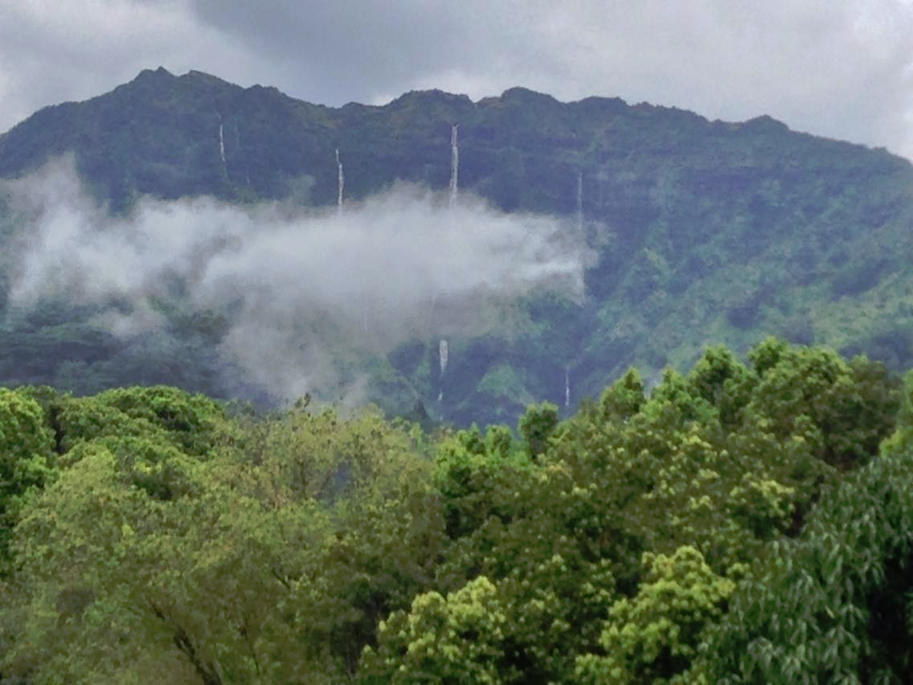

We meet on the 1st Monday of the month at the KIUC Conference Room,
4463 Pahe'e Street, in Lihu'e. Get a map
{kind=link}
Sign up to receive our free monthly newsletter, QRV. It's delivered securely in HTML format with all the stuff you need to know about what's happening in Amateur Radio on Kaua'i Island. Include your name, call sign (if you have one...you don't have to be a licensed ham to get QRV) and your e-mail address. You can unsubscribe at any time.
Subscribe to QRV
Congratulations to the folks who passed their FCC exams on June 28th!

Mt. Makaleha...part of the
wettest spot on Earth
Application Form
License Study Sessions and Exams Sat. Sept 6th
VOAD
Saturday
Breakfast - We meet
for breakfast on Saturday mornings at The Feral Pig in Harbor Mall. It's an informal event; all are welcome. We start getting there at 0730 hrs when the restaurant opens.
for breakfast on Saturday mornings at The Feral Pig in Harbor Mall. It's an informal event; all are welcome. We start getting there at 0730 hrs when the restaurant opens.
Aloha! I want to welcome you to beautiful Kauai, and the Kauai Amateur Radio Club Web Page. We are a lively group of amateur radio operators who have a common interest in all aspects of amateur radio operation. Our web page lists many of the activities in which we're currently involved, and interesting historical information demonstrating the critical services we provide when disaster strikes. All interested visitors are invited to attend our monthly club meetings and other functions. The time and place is listed on this web site. Licensed hams are also encouraged to participate in our regular Monday Night Net, each Monday evening at 8:00 p.m. on 146.92 MHz, or its linked repeaters, 147.080 MHz or 146.70 MHz. The Club also participates in the Saturday Morning Breakfast gathering. We eagerly invite any visitors to join us to “Talk Story”. Spouses and families are also welcome. The Kauai ARC offers license-testing sessions each quarter. If you are interested in obtaining an FCC Amateur Radio License, contact John Montalbano at KH6JMM@HAWAII.RR.COM and we will provide you with the latest information on where and when the next testing session will be. Again, Aloha and welcome to Kauai. Visiting hams, please give us a call on our repeaters and let us enjoy a QSO while you visit our island. We enjoy helping our visitors to enjoy our beautiful island.
73’s
John M. Montalbano
KH6JMM